Masul Conservation Fund identity.
How the Fund applies the Masul Group brand system (Cradle V3.0). Use this page with the group Brand & Market Presentation.
The mark.
The Fund uses the group’s Cradle mark in Conservation Green. Subsidiaries do not create their own icons, so the Cradle and the approved accent colour identify the Fund.


The Cradle, read for conservation.
The mark’s geometry is fixed by the group. In the Fund’s context the same parts carry these meanings.
| Outer arc | The holding group, a protective canopy over the landscape. Butt linecap, landing flush on the baseline. |
|---|---|
| Middle arc | The units working together. Its endpoints line up with the two side pillars. |
| Inner arc · 60% opacity | The communities and wildlife closest to the protected core. |
| Baseline & pillars | Accountability, the ground that does not shift. The centre pillar is longer and represents the parent company. |
| Hidden M | The negative space between the second and third arcs forms an M. |
Colour.
Conservation Green leads. Masul Red appears only as the parent endorsement. Tints of green are used for backgrounds and never as a second accent.
Typography.
The group type system, with no exceptions. Poppins is used for the brand name and interface. EB Garamond is used for display text and quotations.
Protecting wildlife, with the communities who share its land.
Masul Conservation Fund supports wildlife protection, community conservation and anti-trafficking work in Somaliland.
Voice & usage.
We sound professional, calm, precise and responsible. We state what we do, then show the evidence.
Do
- Use complete sentences in all formal writing
- Pair every claim with evidence or a source
- Attribute prior achievements accurately, for example to CCF Somaliland / LICIT II
- Keep the Cradle on every document, with clear space equal to the inner arc’s radius
- Place the reversed mark only on Conservation Green or darker
Don’t
- Use exclamation marks in official communications
- Lead with “AI” or “tech startup” language
- Distort, rotate, recolour or add effects to the Cradle
- Use the mark below 80% opacity or on low-contrast backgrounds
- Use imagery that identifies informants, suspects or vulnerable community members